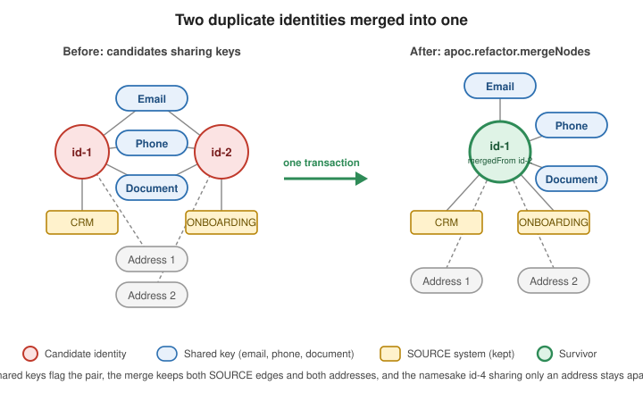

Identity Resolution & KYC
|
This content was generated with the assistance of AI and should be verified against the official documentation before being relied on in production. |
Know-your-customer pipelines ingest the same person more than once: through the branch CRM, through the mobile onboarding app, through a partner feed. This page builds the Spring Boot side of identity resolution: flag the candidate duplicates, let a person confirm them, and fold each confirmed pair into one node without losing a relationship, a source or the history of the merge. The GDS lifecycle (projection, estimate, drop) is not repeated here; it is the one in Calling GDS from Spring Boot, and the mapping annotations are the ones of Spring Data Neo4j.
Problem
The same real-world person exists as several Identity nodes, each created by a different onboarding channel with its
own spelling of the name and address. Left alone, the duplicates inflate customer counts, split a person’s risk
picture in two and let a flagged person reappear under a clean record. The solution has two steps with different
owners: candidate generation, which is cheap, automatic and deliberately generous, and the merge, which is
destructive and happens only after a human (or a scoring model) has confirmed the pair. The worked scenario, the
blocking key and apoc.refactor.mergeNodes are introduced in the
Identity and
access graphs section of the Neo4j Reference; this page is the Spring implementation of it, with one difference:
node ordering uses elementId(), never id(), which is deprecated and not stable across stores.
The dataset is small enough to read at a glance and is reused by the integration test at the end:
| Identity | Name and date of birth | Source | Keys | Expected role |
|---|---|---|---|---|
|
Maria Lopez, 1985-03-12 |
CRM ( |
email |
Survivor of the merge |
|
maria lopez, 1985-03-12 |
ONBOARDING_APP ( |
the same email, phone and document, address "12 C/ Mayor, 28013 Madrid" |
Duplicate of |
|
Jon Smith, 1990-07-01 |
CRM ( |
email |
Unrelated |
|
Maria Lopez, 1979-11-30 |
CRM ( |
address "12 Calle Mayor, Madrid" |
Namesake in the same household, must stay apart |
Graph model
An identity does not store its email or phone as properties. Each key is a node of its own, shared by every identity that carries it, so "two identities share an email" is a path of length two instead of a string comparison, and the same structure feeds both Cypher blocking and Node Similarity. The figure shows the model on the dataset above, before and after the merge.

The key nodes use their natural value as an assigned @Id, so saving the same email twice reuses one node; the SOURCE
relationship carries the provenance and therefore needs @RelationshipProperties:
import java.time.Instant;
import java.time.LocalDate;
import java.util.HashSet;
import java.util.List;
import java.util.Set;
import org.springframework.data.annotation.CreatedDate;
import org.springframework.data.annotation.LastModifiedDate;
import org.springframework.data.annotation.Version;
import org.springframework.data.neo4j.core.schema.Id;
import org.springframework.data.neo4j.core.schema.Node;
import org.springframework.data.neo4j.core.schema.Relationship;
import org.springframework.data.neo4j.core.schema.RelationshipId;
import org.springframework.data.neo4j.core.schema.RelationshipProperties;
import org.springframework.data.neo4j.core.schema.TargetNode;
@Node("Identity")
public class Identity {
@Id
private String identityId;
private String fullName;
private String nameKey; // trimmed, lower-case copy of fullName: the blocking key
private LocalDate dob;
@Version
private Long version;
@CreatedDate
private Instant createdDate;
@LastModifiedDate
private Instant lastModifiedDate;
private List<String> mergedFrom; // identityIds folded into this node, newest last
@Relationship(type = "HAS_EMAIL")
private Set<Email> emails = new HashSet<>();
@Relationship(type = "HAS_PHONE")
private Set<Phone> phones = new HashSet<>();
@Relationship(type = "HAS_DOCUMENT")
private Set<Document> documents = new HashSet<>();
@Relationship(type = "HAS_ADDRESS")
private Set<Address> addresses = new HashSet<>();
@Relationship(type = "SOURCE")
private Set<SourceLink> sources = new HashSet<>();
// constructor, getters and setters omitted
}
@Node("Email")
public record Email(@Id String value) {
}
@Node("Phone")
public record Phone(@Id String e164) {
}
@Node("Document")
public record Document(@Id String number, String type) {
}
@Node("Address")
public record Address(@Id String normalized, String raw) {
}
@Node("SourceSystem")
public record SourceSystem(@Id String name) {
}
@RelationshipProperties
public class SourceLink {
@RelationshipId
private Long id;
private String externalId; // the record's key in the upstream system
private Instant ingestedAt;
@TargetNode
private SourceSystem system;
// constructor, getters and setters omitted
}The annotations are the ones of the Spring Data Neo4j page, including the
generated relationship id that @RelationshipId marks. See
Spring Data Neo4j — Mapping and
Spring Data Neo4j — Metadata-based mapping.
Two design choices are made here for the merge, not for the reads. nameKey is stored, normalised at ingestion, so that
the blocking query compares plain equality and can use an index instead of calling toLower on every pair. version,
createdDate, lastModifiedDate and mergedFrom are ordinary properties of the survivor and the merge has to update
them on purpose, as shown below.
The auditing fields need auditing switched on once per application:
@Configuration
@EnableNeo4jAuditing
class AuditingConfig {
}Schema
Constraints and indexes belong to the database and must exist before the first write. Spring Data Neo4j does not create
them from the annotations, so the application does it at startup with idempotent IF NOT EXISTS statements. The
uniqueness constraints also create the indexes behind every MERGE and MATCH on a key; the composite index on
nameKey and dob serves the blocking query.
@Component
class IdentitySchema implements ApplicationRunner {
private static final List<String> STATEMENTS = List.of(
"CREATE CONSTRAINT identity_id IF NOT EXISTS FOR (i:Identity) REQUIRE i.identityId IS UNIQUE",
"CREATE CONSTRAINT email_value IF NOT EXISTS FOR (e:Email) REQUIRE e.value IS UNIQUE",
"CREATE CONSTRAINT phone_e164 IF NOT EXISTS FOR (p:Phone) REQUIRE p.e164 IS UNIQUE",
"CREATE CONSTRAINT document_number IF NOT EXISTS FOR (d:Document) REQUIRE d.number IS UNIQUE",
"CREATE CONSTRAINT address_normalized IF NOT EXISTS FOR (a:Address) REQUIRE a.normalized IS UNIQUE",
"CREATE CONSTRAINT source_name IF NOT EXISTS FOR (s:SourceSystem) REQUIRE s.name IS UNIQUE",
"CREATE CONSTRAINT audit_id IF NOT EXISTS FOR (m:MergeAudit) REQUIRE m.auditId IS UNIQUE",
"CREATE INDEX identity_blocking IF NOT EXISTS FOR (i:Identity) ON (i.nameKey, i.dob)");
private final Neo4jClient client;
IdentitySchema(Neo4jClient client) {
this.client = client;
}
@Override
public void run(ApplicationArguments args) {
STATEMENTS.forEach(statement -> client.query(statement).run());
}
}See Neo4j Cypher Manual — Constraints and Neo4j Cypher Manual — Indexes; the types and their trade-offs are in Indexes and Constraints. A schema that is part of the deployment (a migration tool, a Helm job) is preferable to one created by the application at startup; the runner above is the smallest thing that keeps a new environment correct.
The unique constraints do more than speed things up. apoc.refactor.mergeNodes is a data-moving operation, and a
uniqueness constraint on the key nodes is what guarantees that two identities that "share an email" really point at
one Email node and not at two copies that happen to look alike.
Writes
Ingestion saves an identity together with its keys. Because the keys have assigned ids, a second identity carrying the
same email is attached to the existing Email node (Spring Data Neo4j issues a MERGE for an entity whose id is
assigned), which is exactly the sharing the rest of the page relies on. The service normalises before it saves: the
keys are the unit of matching, so a phone that is not in E.164 form or an address that is not normalised never matches.
public record IncomingIdentity(String identityId, String fullName, LocalDate dob, String sourceSystem,
String externalId, Set<String> emails, Set<String> phones,
Map<String, String> documents, Set<String> addresses) {
}
@Service
public class IdentityIngestService {
private final IdentityRepository identities;
private final KeyNormalizer normalizer;
public IdentityIngestService(IdentityRepository identities, KeyNormalizer normalizer) {
this.identities = identities;
this.normalizer = normalizer;
}
@Transactional
public Identity ingest(IncomingIdentity in) {
var identity = new Identity(in.identityId(), in.fullName(), normalizer.name(in.fullName()), in.dob());
in.emails().forEach(e -> identity.getEmails().add(new Email(normalizer.email(e))));
in.phones().forEach(p -> identity.getPhones().add(new Phone(normalizer.e164(p))));
in.documents().forEach((number, type) ->
identity.getDocuments().add(new Document(normalizer.document(number), type)));
in.addresses().forEach(a -> identity.getAddresses().add(new Address(normalizer.address(a), a)));
identity.getSources().add(new SourceLink(in.externalId(), Instant.now(), new SourceSystem(in.sourceSystem())));
return identities.save(identity);
}
}Ingestion never merges. Even an exact match is only recorded as a candidate, because a deduplication that runs inside
the write path turns every normalisation bug into permanent data loss. For bulk loads the save loop is the wrong tool;
use Neo4jClient with UNWIND $rows as in Importing Data.
Queries and analytics
Blocking-key candidates
Candidate generation unions two cheap sources of evidence: the name and date of birth blocking key of the Neo4j
Reference page, and any pair of identities that share a high-trust key node (email, phone or document). Addresses are
deliberately not a trigger, because households and offices share them; they appear later only as supporting evidence.
Each pair is produced once by ordering the two nodes with elementId():
public record CandidatePair(String firstId, String secondId, Set<String> evidence) {
/** The query orders by elementId, which is not a business order: normalise before comparing. */
public Set<String> ids() {
return Set.of(firstId, secondId);
}
}
@Service
public class CandidateService {
private static final String CANDIDATES = """
CALL () {
MATCH (a:Identity)
MATCH (b:Identity {nameKey: a.nameKey, dob: a.dob})
WHERE elementId(a) < elementId(b)
RETURN a, b, 'NAME_DOB' AS evidence
UNION
MATCH (a:Identity)-[r1:HAS_EMAIL|HAS_PHONE|HAS_DOCUMENT]->(key)<-[r2]-(b:Identity)
WHERE elementId(a) < elementId(b) AND type(r1) = type(r2)
RETURN a, b, type(r1) AS evidence
}
WITH a, b, collect(DISTINCT evidence) AS evidence
RETURN a.identityId AS firstId, b.identityId AS secondId, evidence
ORDER BY firstId, secondId
""";
private final Neo4jClient client;
public CandidateService(Neo4jClient client) {
this.client = client;
}
@Transactional(readOnly = true)
public List<CandidatePair> candidates() {
return client.query(CANDIDATES)
.fetchAs(CandidatePair.class)
.mappedBy((typeSystem, record) -> new CandidatePair(
record.get("firstId").asString(),
record.get("secondId").asString(),
new TreeSet<>(record.get("evidence").asList(value -> value.asString()))))
.all()
.stream()
.toList();
}
}On the dataset the query returns exactly one pair, id-1 and id-2, with the evidence HAS_DOCUMENT, HAS_EMAIL,
HAS_PHONE and NAME_DOB. id-4 shares the name with id-1 but not the date of birth, and the address alone does
not trigger anything, so the namesake is not offered. The elementId() ordering is unstable and carries no meaning,
which is why CandidatePair.ids() returns a set: compare pairs as sets, never as ordered tuples.
Node Similarity and WCC clustering
Blocking finds pairs that agree exactly on a key. Node Similarity finds identities that overlap on many keys even
when no single one is decisive, and WCC turns the similar pairs into clusters, because duplicates arrive in groups of
more than two. The identities and their key nodes form a bipartite graph, so the native projection is enough: five
labels, four HAS_* types. Node Similarity compares the outgoing neighbours of each identity (Jaccard by default),
mutate stores a SIMILAR relationship on the in-memory graph, and gds.wcc.write persists a cluster id on the
identities only:
@Service
public class ClusteringService {
private static final Map<String, Object> KEY_RELATIONSHIPS = Map.of(
"HAS_EMAIL", Map.of("orientation", "NATURAL"),
"HAS_PHONE", Map.of("orientation", "NATURAL"),
"HAS_DOCUMENT", Map.of("orientation", "NATURAL"),
"HAS_ADDRESS", Map.of("orientation", "NATURAL"));
private final GdsGraphs graphs;
private final Neo4jClient client;
public ClusteringService(GdsGraphs graphs, Neo4jClient client) {
this.graphs = graphs;
this.client = client;
}
/** Writes reviewClusterId on every Identity; returns the number of similar pairs found. */
public long recomputeClusters(double similarityCutoff) {
try (var graph = graphs.projectNative("identity-resolution",
List.of("Identity", "Email", "Phone", "Document", "Address"), KEY_RELATIONSHIPS)) {
long pairs = client
.query("""
CALL gds.nodeSimilarity.mutate($graph, {
mutateRelationshipType: 'SIMILAR',
mutateProperty: 'score',
similarityCutoff: $cutoff,
topK: 10
})
YIELD relationshipsWritten
RETURN relationshipsWritten
""")
.bind(graph.name()).to("graph")
.bind(similarityCutoff).to("cutoff")
.fetchAs(Long.class)
.mappedBy((typeSystem, record) -> record.get("relationshipsWritten").asLong())
.one()
.orElseThrow();
client
.query("""
CALL gds.wcc.write($graph, {
nodeLabels: ['Identity'],
relationshipTypes: ['SIMILAR'],
writeProperty: 'reviewClusterId'
})
YIELD componentCount
RETURN componentCount
""")
.bind(graph.name()).to("graph")
.run();
return pairs;
}
}
}See GDS — Node Similarity and GDS — Weakly Connected Components; the algorithms are explained in Similarity, Embeddings and ML Pipelines and Community Detection Algorithms.
Three details matter. topK defaults to 10 and similarityCutoff is the knob that trades recall for review work; the
dataset gives id-1 and id-2 a Jaccard of 0.6 (three shared keys out of five distinct ones) and id-1 and id-4
0.25 (the shared address), so a cutoff of 0.4 separates the household from the duplicate. reviewClusterId is only a
membership marker: component ids are not stable between runs, so a clustering is compared by the sets of identities,
not by the ids. And gds.wcc.write is a write procedure: the clustering runs in a background job, in the way described
on the foundation page, not inside a request transaction. A nightly run is scheduled with @Scheduled and ShedLock as
in Scheduling and ShedLock, with a lockAtMostFor longer than the
longest realistic run. The estimate guard of the foundation page applies as well before projecting a large graph.
Service and API
The review queue is the cheap, read-only side: it joins the clusters computed by the job with the evidence of the candidate query, and the endpoint never starts a projection.
public record ReviewCluster(long clusterId, Set<String> identityIds) {
}
@Service
public class ReviewQueueService {
private final Neo4jClient client;
public ReviewQueueService(Neo4jClient client) {
this.client = client;
}
@Transactional(readOnly = true)
public List<ReviewCluster> pendingClusters() {
return client
.query("""
MATCH (i:Identity)
WHERE i.reviewClusterId IS NOT NULL
WITH i.reviewClusterId AS clusterId, collect(i.identityId) AS ids
WHERE size(ids) > 1
RETURN clusterId, ids
ORDER BY clusterId
""")
.fetchAs(ReviewCluster.class)
.mappedBy((typeSystem, record) -> new ReviewCluster(
record.get("clusterId").asLong(),
new TreeSet<>(record.get("ids").asList(value -> value.asString()))))
.all()
.stream()
.toList();
}
}See Spring Data Neo4j — reference guide for Neo4jClient.
The merge
Merging is the destructive step, and it has four concerns that a plain apoc.refactor.mergeNodes call does not solve
on its own:
-
One transaction. The merge, the version bump, the
mergedFromlist and the audit node commit together or not at all. A merge that succeeds and an audit that fails would leave a deleted identity with no trace. -
APOC bypasses Spring Data Neo4j. The procedure moves properties and relationships inside the database. No entity lifecycle callback runs, so
@Versionis not incremented and@LastModifiedDateis not set; the statement does both explicitly, using the same property names the mapping uses (version,lastModifiedDate). -
Optimistic locking. The reviewer decided on the survivor as they saw it. The request carries the survivor’s
version; if the node changed in between, the merge is refused with Spring’sOptimisticLockingFailureException, the same exception Spring Data Neo4j raises for a stalesave. -
Idempotency and provenance. Confirming the same pair twice must not fail or double-merge, and nothing about the duplicate’s origin may disappear.
The statement uses properties: 'discard', so the survivor (the first node of the list) keeps its own values and
mergeRels: true, so relationships to the same key node collapse into one while relationships to different nodes (the
second address, the second SOURCE system) are all kept. combine is the wrong choice for identity data: it would
turn fullName into the array ["Maria Lopez", "maria lopez"], which Spring Data Neo4j can no longer map to a
String.
public record MergeCommand(String survivorId, String duplicateId, long expectedVersion, String decidedBy) {
}
public record MergeResult(String survivorId, long version, List<String> mergedFrom, boolean merged) {
}
@Service
public class IdentityMergeService {
private final Neo4jClient client;
public IdentityMergeService(Neo4jClient client) {
this.client = client;
}
@Transactional
public MergeResult merge(MergeCommand command) {
// 1. Lock both nodes and read the state the decision is checked against.
var state = client
.query("""
MATCH (s:Identity {identityId: $survivorId})
OPTIONAL MATCH (d:Identity {identityId: $duplicateId})
CALL apoc.lock.nodes([n IN [s, d] WHERE n IS NOT NULL])
RETURN s.version AS version, coalesce(s.mergedFrom, []) AS mergedFrom, d IS NOT NULL AS duplicateExists
""")
.bindAll(Map.of("survivorId", command.survivorId(), "duplicateId", command.duplicateId()))
.fetchAs(SurvivorState.class)
.mappedBy((typeSystem, record) -> new SurvivorState(
record.get("version").asLong(),
record.get("mergedFrom").asList(value -> value.asString()),
record.get("duplicateExists").asBoolean()))
.one()
.orElseThrow(() -> new IdentityNotFoundException(command.survivorId()));
// 2. Idempotency: a duplicate that is already gone and recorded is a repeated confirmation.
if (!state.duplicateExists()) {
if (state.mergedFrom().contains(command.duplicateId())) {
return new MergeResult(command.survivorId(), state.version(), state.mergedFrom(), false);
}
throw new IdentityNotFoundException(command.duplicateId());
}
// 3. Optimistic locking, checked by hand because APOC does not go through Spring Data Neo4j.
if (state.version() != command.expectedVersion()) {
throw new OptimisticLockingFailureException(
"Identity %s is at version %d, the review was made on %d".formatted(
command.survivorId(), state.version(), command.expectedVersion()));
}
// 4. Merge, bump the bookkeeping and record the audit node in the same statement.
return client
.query("""
MATCH (s:Identity {identityId: $survivorId})
MATCH (d:Identity {identityId: $duplicateId})
CALL apoc.refactor.mergeNodes([s, d], {properties: 'discard', mergeRels: true})
YIELD node
SET node.version = node.version + 1,
node.lastModifiedDate = datetime(),
node.mergedFrom = coalesce(node.mergedFrom, []) + [$duplicateId]
CREATE (audit:MergeAudit {
auditId: randomUUID(),
survivorId: $survivorId,
mergedFromId: $duplicateId,
decidedBy: $decidedBy,
mergedAt: datetime()
})-[:AUDITS]->(node)
RETURN node.version AS version, node.mergedFrom AS mergedFrom
""")
.bindAll(Map.of(
"survivorId", command.survivorId(),
"duplicateId", command.duplicateId(),
"decidedBy", command.decidedBy()))
.fetchAs(MergeResult.class)
.mappedBy((typeSystem, record) -> new MergeResult(
command.survivorId(),
record.get("version").asLong(),
record.get("mergedFrom").asList(value -> value.asString()),
true))
.one()
.orElseThrow();
}
private record SurvivorState(long version, List<String> mergedFrom, boolean duplicateExists) {
}
}See APOC — apoc.refactor.mergeNodes,
Spring Data Neo4j — Neo4jClient and
Spring Data Neo4j — reference guide (optimistic locking with @Version).
The @Version and @Transactional semantics are covered in Optimistic locking with @Version
and Transactions; the general isolation and locking
trade-offs in Transaction Isolation and Locking.
Why each step is there. The lock in step 1 serialises two reviewers confirming overlapping pairs: the second waits,
then sees the first one’s version bump and fails step 3 instead of merging into a node that no longer exists. Step 3
is an application-level @Version check; an entity loaded before the merge and later saved fails Spring Data Neo4j’s
own check, because the property was incremented by step 4. The survivor’s createdDate is untouched (discard), so
the older record should be the first node of the list: the reviewer picks the survivor, and the UI defaults to the
identity with the earlier createdDate. The audit node is created with randomUUID(), kept apart from the identity,
and linked with AUDITS, so the history survives even if the survivor is later merged into something else.
A relationship that Spring Data Neo4j loads as a @Relationship collection reflects the merge on the next read: the
survivor of the dataset has one Email, one Phone, one Document, two Address nodes and two SOURCE
relationships, one to each system.
REST endpoints
@RestController
@RequestMapping("/api/identity-resolution")
class IdentityResolutionController {
private final CandidateService candidates;
private final ReviewQueueService queue;
private final IdentityMergeService merges;
IdentityResolutionController(CandidateService candidates, ReviewQueueService queue, IdentityMergeService merges) {
this.candidates = candidates;
this.queue = queue;
this.merges = merges;
}
@GetMapping("/candidates")
List<CandidatePair> candidates() {
return candidates.candidates();
}
@GetMapping("/clusters")
List<ReviewCluster> clusters() {
return queue.pendingClusters();
}
@PostMapping("/merges")
ResponseEntity<MergeResult> merge(@RequestBody MergeCommand command) {
var result = merges.merge(command);
return result.merged() ? ResponseEntity.status(HttpStatus.CREATED).body(result)
: ResponseEntity.ok(result);
}
@ExceptionHandler(OptimisticLockingFailureException.class)
ProblemDetail conflict(OptimisticLockingFailureException e) {
return ProblemDetail.forStatusAndDetail(HttpStatus.CONFLICT, e.getMessage());
}
@ExceptionHandler(IdentityNotFoundException.class)
ProblemDetail notFound(IdentityNotFoundException e) {
return ProblemDetail.forStatusAndDetail(HttpStatus.NOT_FOUND, e.getMessage());
}
}See Spring Framework — Error Responses.
Conventions for resources, status codes and problem details are in REST APIs.
The merge endpoint is irreversible, so it must be reachable only by the reviewer role, and decidedBy should come from
the authenticated principal rather than from the request body; see
Spring Security (the MergeCommand above keeps the field to stay
self-contained). A merge counter and a duration timer, as in
Metrics and Observability, tell operators when review volume
or the merge rate changes.
Integration test
The test starts a Neo4j server with the GDS and APOC plugins, seeds the dataset of the table above and asserts the
candidates, the clustering and the merge. @ServiceConnection wires the container into the application as on the
foundation page. The container class is org.testcontainers.neo4j.Neo4jContainer, the APOC and GDS jars are installed
through NEO4J_PLUGINS, and the procedures are unrestricted so that gds.* and apoc.* can run.
import static org.assertj.core.api.Assertions.assertThat;
import static org.assertj.core.api.Assertions.assertThatThrownBy;
import org.testcontainers.junit.jupiter.Container;
import org.testcontainers.junit.jupiter.Testcontainers;
import org.testcontainers.neo4j.Neo4jContainer;
@Testcontainers
@SpringBootTest
class IdentityResolutionIT {
@Container
@ServiceConnection
static final Neo4jContainer NEO4J = new Neo4jContainer("neo4j:2026.10.1")
.withEnv("NEO4J_PLUGINS", "[\"graph-data-science\", \"apoc\"]")
.withEnv("NEO4J_dbms_security_procedures_unrestricted", "gds.*,apoc.*");
@Autowired Neo4jClient client;
@Autowired CandidateService candidateService;
@Autowired ClusteringService clusteringService;
@Autowired ReviewQueueService queue;
@Autowired IdentityMergeService mergeService;
@BeforeEach
void seed() {
client.query("MATCH (n) DETACH DELETE n").run();
client.query("""
CREATE (crm:SourceSystem {name: 'CRM'}), (app:SourceSystem {name: 'ONBOARDING_APP'})
CREATE (email:Email {value: 'maria.lopez@example.com'}),
(phone:Phone {e164: '+34600111222'}),
(dni:Document {number: '12345678Z', type: 'DNI'}),
(addr1:Address {normalized: '12 calle mayor madrid'}),
(addr2:Address {normalized: '12 c mayor 28013 madrid'})
CREATE (i1:Identity {identityId: 'id-1', fullName: 'Maria Lopez', nameKey: 'maria lopez',
dob: date('1985-03-12'), version: 0, createdDate: datetime()})
CREATE (i2:Identity {identityId: 'id-2', fullName: 'maria lopez', nameKey: 'maria lopez',
dob: date('1985-03-12'), version: 0, createdDate: datetime()})
CREATE (i3:Identity {identityId: 'id-3', fullName: 'Jon Smith', nameKey: 'jon smith',
dob: date('1990-07-01'), version: 0, createdDate: datetime()})
CREATE (i4:Identity {identityId: 'id-4', fullName: 'Maria Lopez', nameKey: 'maria lopez',
dob: date('1979-11-30'), version: 0, createdDate: datetime()})
CREATE (i1)-[:HAS_EMAIL]->(email), (i2)-[:HAS_EMAIL]->(email)
CREATE (i1)-[:HAS_PHONE]->(phone), (i2)-[:HAS_PHONE]->(phone)
CREATE (i1)-[:HAS_DOCUMENT]->(dni), (i2)-[:HAS_DOCUMENT]->(dni)
CREATE (i1)-[:HAS_ADDRESS]->(addr1), (i2)-[:HAS_ADDRESS]->(addr2), (i4)-[:HAS_ADDRESS]->(addr1)
CREATE (i3)-[:HAS_EMAIL]->(:Email {value: 'jon.smith@example.com'})
CREATE (i3)-[:HAS_DOCUMENT]->(:Document {number: 'P1234567', type: 'PASSPORT'})
CREATE (i1)-[:SOURCE {externalId: 'c-1001'}]->(crm), (i2)-[:SOURCE {externalId: 'a-77'}]->(app),
(i3)-[:SOURCE {externalId: 'c-1002'}]->(crm), (i4)-[:SOURCE {externalId: 'c-2044'}]->(crm)
""").run();
}
@Test
void blockingFindsOnlyTheTrueDuplicate() {
var pairs = candidateService.candidates();
assertThat(pairs).hasSize(1);
assertThat(pairs.get(0).ids()).containsExactlyInAnyOrder("id-1", "id-2");
assertThat(pairs.get(0).evidence())
.containsExactlyInAnyOrder("NAME_DOB", "HAS_EMAIL", "HAS_PHONE", "HAS_DOCUMENT");
}
@Test
void clusteringGroupsTheDuplicatesAndLeavesTheNamesakeAlone() {
long pairs = clusteringService.recomputeClusters(0.4);
assertThat(pairs).isPositive();
var clusters = queue.pendingClusters();
assertThat(clusters).hasSize(1);
assertThat(clusters.get(0).identityIds()).containsExactlyInAnyOrder("id-1", "id-2");
}
@Test
void mergeFoldsTheDuplicateIntoTheSurvivorAndKeepsProvenance() {
var result = mergeService.merge(new MergeCommand("id-1", "id-2", 0, "reviewer-1"));
assertThat(result.merged()).isTrue();
assertThat(result.version()).isEqualTo(1);
assertThat(result.mergedFrom()).containsExactly("id-2");
assertThat(count("MATCH (i:Identity) RETURN count(i)")).isEqualTo(3);
assertThat(count("MATCH (i:Identity {identityId: 'id-2'}) RETURN count(i)")).isZero();
assertThat(count("MATCH (:Identity {identityId: 'id-1'})-[r:HAS_EMAIL]->() RETURN count(r)")).isEqualTo(1);
assertThat(count("MATCH (:Identity {identityId: 'id-1'})-[r:HAS_PHONE]->() RETURN count(r)")).isEqualTo(1);
assertThat(count("MATCH (:Identity {identityId: 'id-1'})-[r:HAS_ADDRESS]->() RETURN count(r)")).isEqualTo(2);
assertThat(count("MATCH (:Identity {identityId: 'id-1'})-[r:SOURCE]->() RETURN count(r)")).isEqualTo(2);
assertThat(count("MATCH (:MergeAudit {mergedFromId: 'id-2'})-[:AUDITS]->(:Identity {identityId: 'id-1'}) RETURN count(*)"))
.isEqualTo(1);
}
@Test
void repeatedAndStaleConfirmationsAreHandled() {
mergeService.merge(new MergeCommand("id-1", "id-2", 0, "reviewer-1"));
var again = mergeService.merge(new MergeCommand("id-1", "id-2", 1, "reviewer-2"));
assertThat(again.merged()).isFalse();
assertThat(count("MATCH (m:MergeAudit) RETURN count(m)")).isEqualTo(1);
assertThatThrownBy(() -> mergeService.merge(new MergeCommand("id-1", "id-4", 0, "reviewer-2")))
.isInstanceOf(OptimisticLockingFailureException.class);
assertThat(count("MATCH (i:Identity {identityId: 'id-4'}) RETURN count(i)")).isEqualTo(1);
}
private long count(String cypher) {
return client.query(cypher).fetchAs(Long.class).one().orElseThrow();
}
}See Testcontainers — Neo4j module, Spring Boot — Testcontainers and APOC — Installation. The strategy for fixtures, container reuse and deterministic assertions is in Unit and Integration Testing.
The assertions follow the rules for non-deterministic graph results: clusters and pairs are compared as sets of
business ids, the cluster id is never asserted, and the similarity cutoff (0.4) sits well between the duplicate’s
score (0.6) and the household’s (0.25), so a change in tie-breaking cannot flip the result. The last test checks
the failure path as well: the stale merge leaves id-4 in place, because the version check fails before the
statement that deletes anything.
Pitfalls and variations
-
Over-merging. A false merge is far more expensive than a missed one, since undoing it means reconstructing two identities from a merged node. Keep the candidate rules strict, treat shared addresses and shared devices as evidence and never as a trigger, never merge on name and date of birth alone for a common name, and keep the human or the scoring threshold in the loop. The namesake
id-4in the dataset exists to be wrong about. -
Idempotency. Reviewers double-click and retries re-deliver. The
mergedFromlist and the audit node make the second confirmation a no-op that returnsmerged: false; without them a repeated request either fails on the missing node or, worse, merges something else that was reassigned to the same business key. -
Provenance.
SOURCErelationships are never merged away: they point at differentSourceSystemnodes, somergeRelskeeps them, and the survivor can still answer which systems vouched for it. If two duplicates came from the same system,mergeRelscollapses theirSOURCEedges into one and, withdiscard, keeps only the first edge’sexternalId: move the secondexternalIdinto the audit node before merging if that value matters. -
Auditing fields. The merge sets
lastModifiedDateandversionby hand because APOC never runs Spring Data Neo4j’s callbacks. Store the dates as the same Cypher type the mapping writes (datetime()for anInstant), or the nextsaveof the survivor will not read them. KeepcreatedDatefrom the older record by listing it first. -
Stale clusters. After a merge the survivor keeps its old
reviewClusterId, and the removed identity is gone from the queue; the next clustering run recomputes everything. Filter the queue by identities that still exist, and do not treat cluster ids as durable. -
Large clusters. A cluster of hundreds of identities is a data-quality alarm, not a merge job: a shared placeholder email or phone ("noreply@", "0000000000") connects unrelated people. Maintain a deny list of key values and exclude them from the projection with a Cypher projection filter, as described on the foundation page.
-
Alpha and beta features. The GDS procedures used here (
gds.nodeSimilarity,gds.wcc) carry no tier label in the manual, andapoc.refactor.mergeNodesandapoc.lock.nodesare APOC Core procedures. If the matching moves to a trained model, the link prediction pipelines are Beta and the topological link prediction functions are listed as Alpha, so pin the server version in tests. -
Variations. Replace Node Similarity with
gds.knnover name embeddings for fuzzy name matching, or with Filtered Node Similarity (gds.nodeSimilarity.filtered) to compare only identities of different sources; batch the merge of a confirmed cluster as repeated pair merges in one transaction, always into the same survivor; and for a platform-wide deduplication, consider a dedicated match-and-merge service in front of the graph instead of running it inside one application.